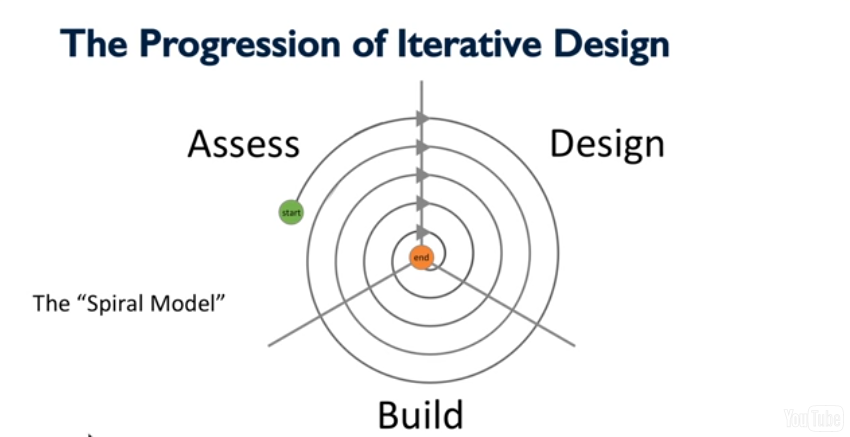
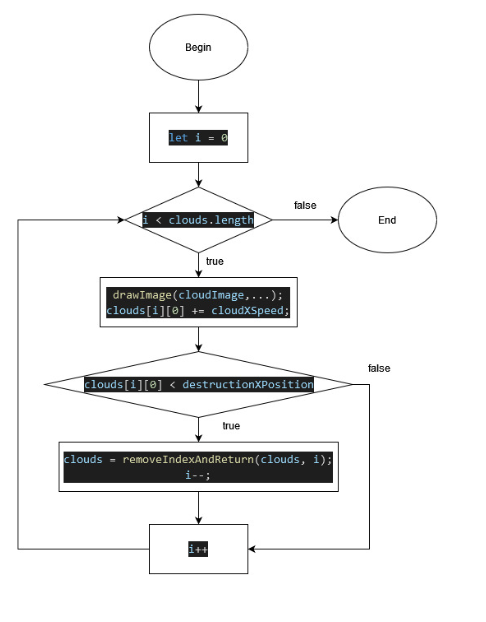
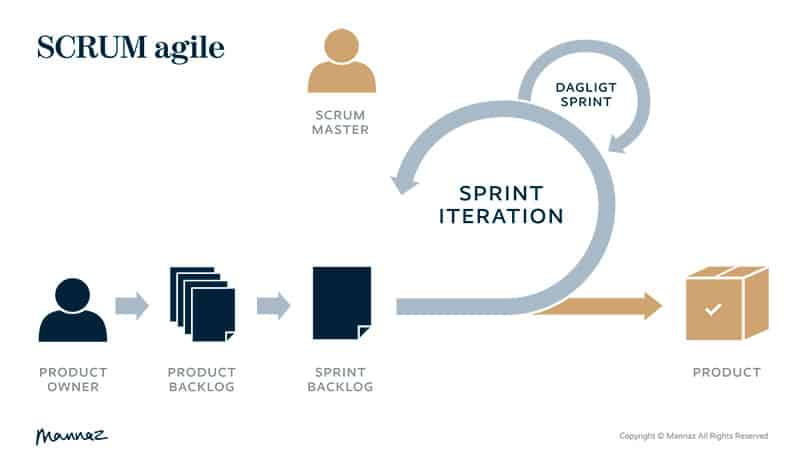
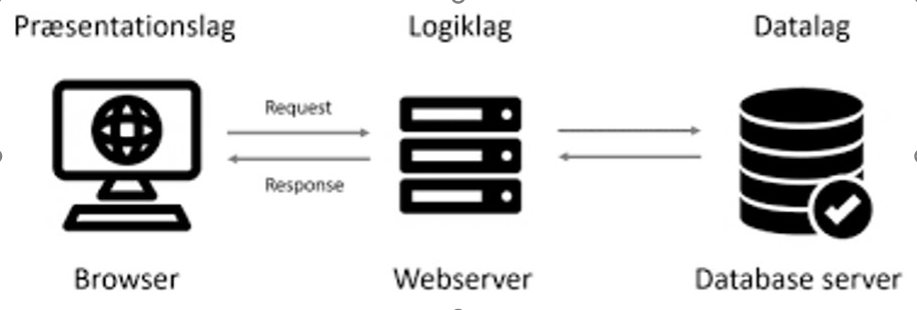
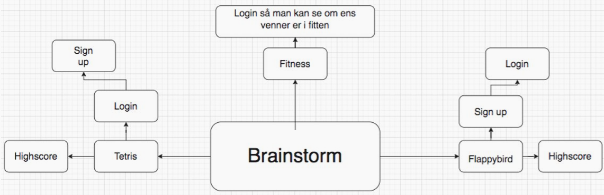
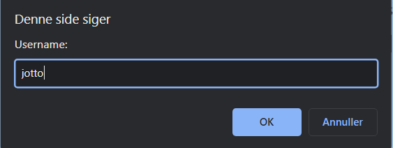
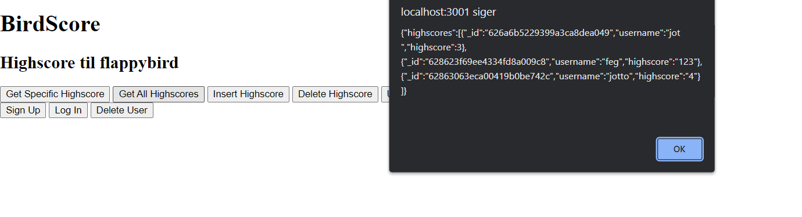

Informatik Noter
For at lave GUI (Graphical user interface), skal man bruge HTML (Hypertext markup language).
HTML er til at definere indholdet på en hjemmeside.
HTML kan bruges til at lave indhold på en side med elementer og deres attributes.
Her er et link:
https://www.w3schools.com/html/html_intro.asp
CSS (Cascading style sheet) kan man få hjemmesider til at se pænere ud.
CSS kan bruges til at gøre redigere en hjemmesides udseende der er forskellige layouts og tricks man kan bruge til at gøre ens side flot og responsive.
Her et link til ydereligere info: https://www.w3schools.com/Css/css_intro.asp
Man bruger RGB til at lave egne farve til ens hjemmeside el. andet.
Her er et link:
https://www.w3schools.com/colors/colors_rgb.asp
Man bruger DOM og Javascript til lave dynamik på en eller statisk hjemmeside. Altså, få elementer til at ændre sig af sig uden at reloade siden.
For at den mere interaktiv bruger man DOM. Det er her Javascript kommer ind i billedet, da DOM er lavet på Javascript. DOM er bare et interface der gør det lettere for programmører at ændre på hjemmesider med Javascript
Her er mere til DOM: https://www.w3schools.com/js/js_htmldom.asp
Assess: Man vuderer hvad brugeren laver/gør lige nu og hvad deres behov er så man kan forstå designet og dets problemer, som de står over for så man kan designe produkter, der immødekommer deres behov.
Design: Man tager hvad man har lært i den indledene vudering, og kommer med ideer, for hvordan man levere et produkt, som løser problemet, som vi har fundet.
Build: Man tager de design ideer og man laver/bygger dem til prototyper, som man kan bruge til at vise ideen. Som man kan bruge til at feedback, om ideen er god eller dårlig.
Forskellige metoder:
Interviews (snak med brugerne)
Observations (kig på brugerne)
Surveys (giv brugerne spørgeskemaer)
User Testing (få brugerne til at afprøve produktet)
Inspection Methods (kig selv på produktet, som om at du var en bruger)

Console.log: Console.log bruges til at skrive (logs) beskeder til consolen Her er et link: https://www.w3schools.com/jsref/met_console_log.asp
Variabel og Datatyper: Variabler bruges til at lagre data (dataværdier) Datatyper er vigtigt for en computer, hvis de ikke har dem, kan de have problmer med at løse variablerne. Derfor skal man vide hvilke typer der er, og hvad de gør Der findes Number, String og Object Number skrives som hele tal og med decimaler String skrives som "citater", både enkelt vis eller flere Object skrives som et object fx en Tesla Her er lidt links: https://www.w3schools.com/js/js_variables.asp https://www.w3schools.com/js/js_datatypes.asp
Operatorer: Operatorer bruges til at ændre ens variabler. Her er lidt links:https://www.w3schools.com/js/js_assignment.asp https://www.w3schools.com/js/js_arithmetic.asp https://www.w3schools.com/js/js_comparisons.asp
If-statements: If-statements bruges til at få noget til at ske under bestemte betingelser. Her er et link: https://www.w3schools.com/js/js_if_else.asp
Funktioner: Funktioner bruges til at udføre opgaver der er ens. Her er et link: https://www.w3schools.com/js/js_functions.asp
Arrays: Arrays bruges til at opbevare/samle flere ens værdier Her er et link: https://www.w3schools.com/js/js_arrays.asp
Loops: Loops bruges til at gentage den samme logik igen og igen Her er et link: https://www.w3schools.com/js/js_loop_for.asp
Prompt/Alert/Confirm: Prompt/Alert/Confirm bruges til at give brugeren beskeder og bede brugeren om input Her er et link: https://www.w3schools.com/js/js_popup.asp
Flowchart:
Flowcharts er slags diagram, der viser en arbejdsproces
Her er et eksempel:

Scrum og planning:
Scrum er en endnu metode til at komme igennem en arbejdproces, med mere fokus på projektledelse.
Her er et eksempel:

Client-Server modellen
Client-servermodel er en distribueret applikationsstruktur , der opdeler opgaver eller arbejdsbelastninger mellem udbyderne af en ressource eller tjeneste, kaldet servere , og tjenesteanmodere, kaldet klienter.her er et link: https://en.wikipedia.org/wiki/Client%E2%80%93server_model
3-lagsmodellen
N-tier application architecture provides a model by which developers can create flexible and reusable applications. By segregating an application into tiers, developers acquire the option of modifying or adding a specific tier, instead of reworking the entire application. A three-tier architecture is typically composed of a presentation tier, a logic tier, and a data tier.Terminal: Man kan se hvad der sker på serveren
HTTP/HTTPS
HTTP eller HyperText Transfer Protocol er en protokol, som primært bruges til kommunikation på World Wide Web.
HTTPS er en krypteret udgave af HTTP, som benytter Transport Layer Security eller den nu usikre Secure Sockets Layer.
Informatik Projekter
Vores gruppe består af Jeppe Gregersen, Frederik Jotto, Tobias Lehmann og Tobias Hald
Overvejelser
Vi har tænkt over disse problemer: højt snus/nikiton frobrug blandt unge , Info på skærme men det problem vi går med er: Info på skærme
Da vi tænkte det ville hjælpe flest muligt, og det vil være mere intressant
Vi kalder det Geo Strømservice
Vi har tænkt os at lave et system til eleverne og et til lærerne. Det til eleverne skal vise et kort over skolen, hvad klokken er, hvornår der pause, countdown til næste event på skolen, seneste nyt og til sidst en stocklist over hvad der er udsolgt i kantinenDet til lærerne, skal også have et kort over skolen, men hvor man kan se hvilke loakaler der er ledige, og man skal kunne booke dem på skærmen, og der skal også være en stocklist over ting der er udsolgt i kantinen
Vi er i dag den 9.dec 2021, begyndt på vores prototype og indtroduktion. Vi har på produtypen fået lavet, en loginside, en til lærene med en kode. Når man kommer ind på freeze screen, ser man et kort over skolen og en menu man kan trykke på
Når du trykker på menu kommer der et dropdown, med pauser, events, news og kantinen hos eleverne. Hos lærene kommer der dropdown med lokaler, news og kantinen
Mål for projekt:
Et item (Spunk) som giver en powerup
Poweruppen er dobbelt coins i 10 sekunder
Man skal være en karakter (Hasbulla)
Spunk skal spawne ca. hvert 20 sekund
Powerup musik
Ideer til vidreudvikling:
Flere Spunk i flere forskellige farver, der ville give forskellige point
Vores version af spillet ligger her i logbogen, oppe i navigationsbaren, som "Flap"
3-lagsarkitekturs modellen

Scrum:
Brainstorm
Sprint
Flabbybird og database
Highscore og username
Brainstorm:

Videreudvikling (flappybird):
Tilgå gemte highscores lettere
En knap til highscores
Flap Browser:
Vores spil flappybird, der sender highscore til databasen ligger, oppe i navigationsbaren, som Flap Browser.
Sådan ser det ud når man skal indsætte highscore:


Flap Database:
Her kan hente/se highscoresene fra browseren, eksempel under:
